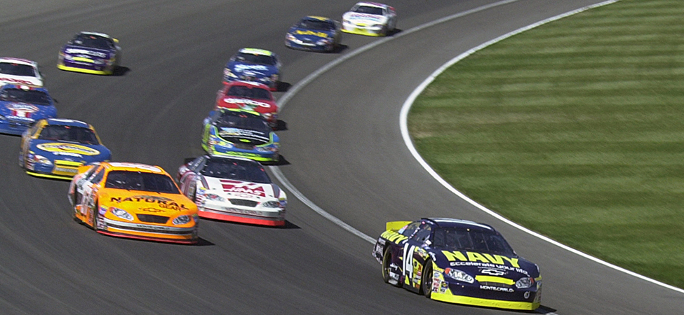

class="introduction"
class="key-equations" title="Key Equations"class="key-concepts" title="Summary"class="review-conceptual-questions" title="Conceptual Questions"class="review-problems" title="Problems"class="review-additional-problems" title="Additional Problems"class="review-challenge" title="Challenge Problems"class="try"class="checkpoint"class="section-exercises"class="check-understanding"Stock cars racing in the Grand National Divisional race at Iowa Speedway in May, 2015. Cars often reach speeds of 200 mph (320 km/h). (credit: modification of work by Erik Schneider/U.S. Navy)

Car racing has grown in popularity in recent years. As each car moves in a curved path around the turn, its wheels also spin rapidly. The wheels complete many revolutions while the car makes only part of one (a circular arc). How can we describe the velocities, accelerations, and forces involved? What force keeps a racecar from spinning out, hitting the wall bordering the track? What provides this force? Why is the track banked? We answer all of these questions in this chapter as we expand our consideration of Newton’s laws of motion.